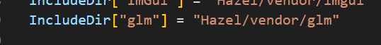

13.数学库
一个高性能的数学库通常需要利用 SIMD（单指令多数据）指令集来加速向量、矩阵等数据的并行计算，而实现这些操作通常依赖于编译器提供的内置函数（intrinsics）或直接编写汇编代码。
SIMD（Single Instruction, Multiple Data，即单指令多数据）是一种并行计算技术，用于在单条指令中同时对多个数据元素执行相同的操作。
SIMD通常通过向量寄存器实现。这些寄存器可以存储多个数据元素（如 4 个 32 位浮点数），而SIMD指令集会直接对这些向量寄存器操作。
SIMD 的核心是数据并行性，即对多个数据执行相同的操作。
例如：
普通指令（逐一处理）：
- 对于 4 个数据：
a[0] + b[0], a[1] + b[1], a[2] + b[2], a[3] + b[3]- 需要执行 4 次加法指令。
SIMD 指令（批量处理）：
- 将 4 个数据打包进一个 SIMD 寄存器，执行一次加法指令即可完成。
操作完成后，将寄存器中的数据存回内存。
SIMD 实现并行计算的关键在于它依赖于特殊的硬件架构，即SIMD 寄存器和SIMD 指令集。这些硬件和指令使得一个计算单元能够同时处理多个数据。
- 硬件层面：
- 使用宽寄存器存储多个数据。
- 硬件设计中包含并行电路来同时操作这些数据。
- 指令层面：
- 特定的 SIMD 指令执行单一操作（如加法、乘法），作用于多个数据。
- 编程层面：
- 使用 SIMD 指令或编译器的自动矢量化技术来优化代码。
这使得 SIMD 特别适合处理重复计算的大规模数据，如矩阵运算、图像处理和音视频编解码等。
SIMD 操作流程：
加载数据：将
A和B的数据分别加载到两个 SIMD 寄存器中：寄存器 A = [1, 2, 3, 4, 5, 6, 7, 8] 寄存器 B = [10, 20, 30, 40, 50, 60, 70, 80]执行并行加法：一条 SIMD 加法指令
_mm256_add_ps对寄存器中的数据执行加法：结果寄存器 C = [11, 22, 33, 44, 55, 66, 77, 88]存储结果：将结果寄存器的数据写回内存。
SIMD 指令集类型
现代 CPU 提供了多个 SIMD 指令集，常见的包括：
- SSE（Streaming SIMD Extensions）：由英特尔引入，最早在 Pentium III 处理器中出现，支持 128 位寄存器，可以操作多个单精度或双精度浮点数。
- AVX（Advanced Vector Extensions）：在 SSE 的基础上扩展了 256 位的寄存器，提高了并行处理能力。AVX 后续版本（如 AVX2 和 AVX-512）进一步提升了并行能力。
- NEON：ARM 处理器的 SIMD 指令集，主要用于移动设备和嵌入式系统，支持 128 位寄存器。
- Altivec/VMX：IBM 的 SIMD 指令集，最早在 PowerPC 架构中引入，具有 128 位寄存器。
优点：
- 高效并行：在需要对大量数据进行相同操作时，能有效提升性能。
- 低延迟：相较于传统的循环结构，SIMD 能减少数据访问和指令执行的时间。
缺点：
- 数据依赖：只能处理相同类型、相同操作的数据，不适合对不同数据执行不同操作的情况。
- 硬件限制：不同处理器的 SIMD 指令集有所不同，代码的移植性可能受到影响。
- 编程复杂性：手动编写 SIMD 代码较为复杂，开发者需要了解底层指令集和寄存器操作。
大部分现代编译器（如 GCC、Clang、MSVC）都为 SIMD 指令提供了内置函数（intrinsics），它们是函数形式的封装，直接对应底层的 SIMD 指令。优点是：
- 可读性较高：比直接写汇编代码更容易理解和维护。
- 可移植性：只要对应的平台支持特定的指令集，代码就能正常运行。
- 优化配合：编译器可以根据上下文优化这些指令。
例如，在 x86 平台上，可以使用 Intel 的 SSE、AVX 指令集：
#include <immintrin.h> // 包含各种 SIMD 内置函数的头文件
__m128 a = _mm_set_ps(1.0f, 2.0f, 3.0f, 4.0f); // 设置一个 128 位寄存器
__m128 b = _mm_set_ps(5.0f, 6.0f, 7.0f, 8.0f);
__m128 c = _mm_add_ps(a, b); // 并行计算四个 float 的和
GLM（OpenGL Mathematics） 是一个基于 C++ 的轻量级数学库，设计初衷是为图形程序员和游戏开发者提供与 GLSL（OpenGL Shading Language） 一致的数学函数和数据类型接口。GLM 是一个头文件库，所有功能都在头文件中实现，无需编译即可直接使用。
基本数据类型：
- 向量类型：
glm::vec2,glm::vec3,glm::vec4。 - 矩阵类型：
glm::mat2,glm::mat3,glm::mat4。 - 四元数类型：
glm::quat。
数学运算：
- 向量和矩阵运算：加法、减法、点积、叉积等。
- 常用数学函数：
glm::sin,glm::cos,glm::pow,glm::sqrt。 - 变换矩阵：平移、旋转、缩放、透视投影、正交投影。
坐标变换：
- 提供便捷的函数来生成和操作常见的变换矩阵，如
glm::translate,glm::rotate,glm::scale。
高级功能：
- 四元数操作：用于处理 3D 旋转，避免万向节锁问题。
- 噪声生成：支持经典噪声（如 Perlin 噪声）。
- 实验性扩展：额外功能模块（需启用
GLM_ENABLE_EXPERIMENTAL）。
SIMD 支持：
- 自动检测 CPU 的 SIMD 指令集（如 SSE2、AVX2），并利用其优化向量和矩阵运算。
对于glm的使用，对于我们使用的VS来说，glm会根据MSCV的配置自动读取所有构建平台，我们只需要引入对应的头文件即可使用。
在premake中配置引入所有的文件和路径。

hpp文件是 C++ 的头文件，其主要功能和.h文件类似，都是用来声明类、函数、模板或变量，以便在多个源文件中共享代码。
.inl文件在 C++ 项目中是一个较为常见的扩展名，通常表示内联实现文件（Inline Implementation File）。在 GLM 中，.inl文件的主要作用是帮助组织代码结构，尤其是在模板类和函数的实现中。模板函数或模板类的实现：
- 由于模板代码必须在编译时完全可见，所以其实现通常不能放在
.cpp文件中，而需要直接放在头文件中。- 为了避免头文件变得过于庞大且混乱，常用
.inl文件来存放模板实现，并通过在头文件中引入的方式引用这些实现。示例
// math_functions.hpp #ifndef MATH_FUNCTIONS_HPP #define MATH_FUNCTIONS_HPP template<typename T> T add(T a, T b); #include "math_functions.inl" // 引入模板实现 #endif
分别在Hazel和Sandbox中的包含路径中设置路径。
重新构建即可。